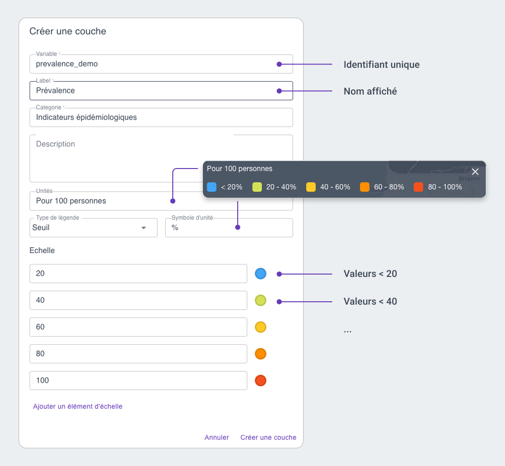
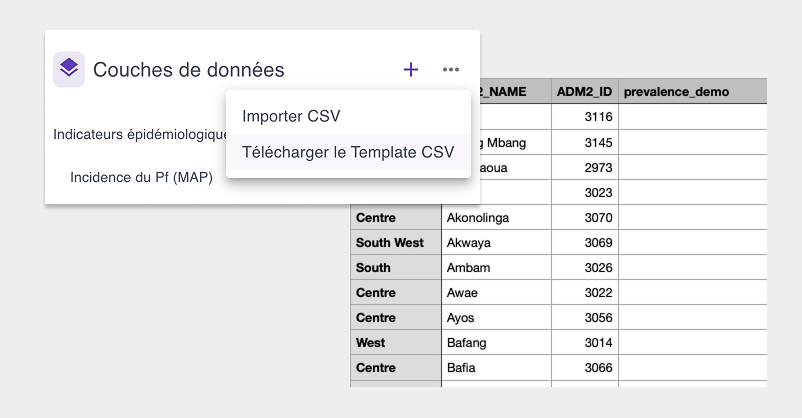
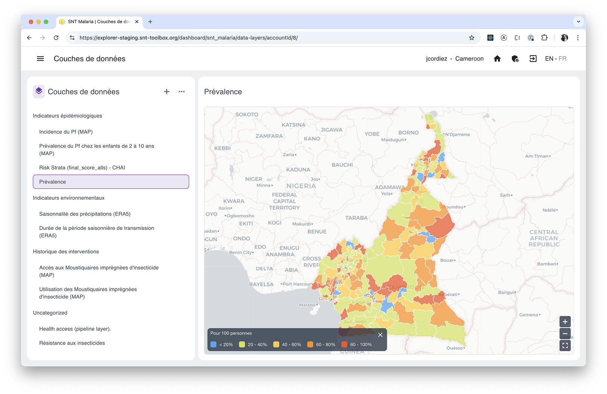

In addition to the SNT Pipeline Library, the SNT Explorer app also lets you import data in CSV format. Watch the video below to see how.
Steps
1. Create a layer
The first step is definition: name and describe the layer you want to import, and most importantly define the scale that will be used for display.
To create a new layer, click the + at the top right of the list and fill in the relevant details.

You can modify each of these details at any time, except for the variable name.
The available scale types are:
| Type | Usage |
|---|---|
| Threshold | Lets you stratify values “by level” (e.g. 0–20%, 20–40%, etc.) |
| Ordinal | Lets you stratify non-numeric or fixed values (e.g. low/medium/high, or 1/2/3) |
| Linear | Displays values on a continuous gradient between a minimum and a maximum |
2. Download the CSV template
Once your new layers are defined, click the … at the top right of the list and select “Download CSV template.”
This will download a CSV file where you only need to fill in the values for the layer you just defined.

3. Import the data
Once this CSV file is filled in, click the … again and select “Import CSV” to finalize the creation of the new layer.
